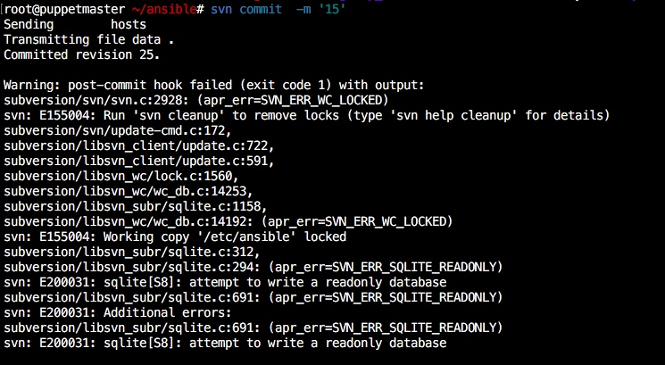

svn服务器搭建与迁移
2016-11-21更新：
今天被svn的钩子搞了半天，网上找解决方法都无效，下午被我试出来了，特此记录。
在svn的钩子中可以使用update来更新配置文件，比如ansible的，puppet的，具体过程是先co到本地，本地修改完更新到svn服务器，触发钩子，更新ansible等服务器。
遇到的问题是：

本地修改完提交到服务器显示工作副本被lock，网上的解决方法是去工作副本clean up，但是根本没用，因为问题根本不出在这。
问题来源：
我的svn是用root运行的，apache是daemon用户运行的，钩子是
svn update /etc/ansible --username wj --password ' '
在运行update的时候其实是daemon用户进行的，而daemon用户显然运行不了svn命令，所以我认为是权限不够导致的。
解决方法：
因此，在/etc/sudoers文件中添加运行apache用户的sudo权限，并在钩子前面加sudo，再次测试，完美解决，修改co到本地的ansible中的hosts文件，commit之后，在服务器的/etc/ansible中的hosts也更新了
具体操作：
echo "daemon ALL=(ALL) NOPASSWD: ALL" >> /etc/sudoers
修改post-commit：sudo svn update /etc/ansible --username wj --password ' '
最近公司各个部门陆陆续续搬迁到上地，机房也搬过去，老大叫我把我们部门的svn库都迁移到备份机上防止原svn服务器搬迁过程损坏造成无法使用的情况。我表示svn以前都没碰过，git倒是学过一段时间，后来网上找了找文档发现使用方法和思想都差不多。我发现这种类似于lnmp之流或是常用的源码编译我已经越来越懒得过多去讲述了，因为configure -h你想知道的都有了，可能会碰到些许坑，不过都是一些路径或是缺少库导致的，仔细排查就能知道。奉上svn安装的官方文档http://svn.apache.org/repos/asf/subversion/trunk/INSTALL。讲的很详细，至少比起mysql之流要好太多了。
安装我就讲两点
1、依赖
编译需要gcc和make，还有几个第三方依赖库，apr、apr-util、SQLite，apr和apr-util包很好找,SQLite没有的话会直接提示你并给出链接，下载解压后将里面的3个文件全部拷贝至svn源码目录的sqlite-amalgamation（没有就自己创建）中，重新执行3部曲即可。
2、正确的安装顺序
yum install expat-devel(serf需要)
serf下载地址wget http://archive.apache.org/dist/serf/serf-1.2.1.tar.bz2
先安装apr、apr-util和serf、serf的编译参数：
./configure --prefix=/usr/local/sina_mobile/apr
./configure --prefix=/usr/local/sina_mobile/apr-util --with-apr=/usr/local/sina_mobile/apr/ --with-ldap
scons APR=/usr/local/sina_mobile/apr APU=/usr/local/sina_mobile/apr-util PREFIX=/usr/local/sina_mobile/serf
./configure --prefix=/usr/local/serf --with-apr=/usr/local/apr --with-apr-util=/usr/local/apr-util
再安装apache，apache的编译参数是
./configure --prefix=/usr/local/sina_mobile/apache-2.2.31 --with-apr=/usr/local/sina_mobile/apr --with-apr-util=/usr/local/sina_mobile/apr-util --enable-dav --enable-so --enable-maintainer-mode --enable-ssl --enable-modules=all --enable-mods-shared=all，编译参数是 ./configure --prefix=/usr/local/sina_mobile/subversion --with-apr=/usr/local/sina_mobile/apr/bin/apr-1-config --with-apr-util=/usr/local/sina_mobile/apr-util/bin/apu-1-config --with-apxs=/usr/local/sina_mobile/apache-2.2.31/bin/apxs --with-serf=/usr/local/sina_mobile/serf --with-sqlite=$PWD/sqlite-amalgamation/sqlite3.c --with-openssl --with-zlib --enable-shared --enable-maintainer-mode --enable-mod-activation,个人建议apache用2.4.20版本，svn用1.8.16，亲测可用
安装完毕后在http的配置文件下有dav_svn_module和authz_svn_module这两个模块说明支持apache的svn安装成功。
搭建
1、创建仓库
创建repos目录作为仓库，然后创建svntest项目，在这里，所有的操作都是对svntest做的，
mkdir /path/to/repos/svntest
svnadmin create /path/to/repos/
在目录/path/to/repos使用默认数据存储方式创建了一个新的版本库。在Subversion 1.2之前，缺省值是Berkeley DB；而现在是FSFS。你可以通过--fs-type参数明确地指定文件系统类型，可选的值包括fsfs和bdb。
svnadmin create --fs-type fsfs(bdb) /path/to/repos
2、配置/path/to/repos/svntest/conf/下的authz、passwd、serve.conf
在server.conf中将anon-access、auth-access、password-db和authz-db前面的注释符号去掉并顶格。
在passwd文件中添加用户=密码
在authz文件中添加组和权限
3、开启服务
svnserve -d -r /path/to/repos
4、导入项目至版本库
svnadmin import svntest svn://localhost/svntest -m "Init commit"
第一个svntest是本地的项目
此时可以在客户端使用svn co将svntest同步为你的工作副本了。
svn checkout svn://ip/svntest
迁移
有很多种方法，dump是官方推荐的备份方法，不过我做了一次感觉导出的dump文件太大，过于占用磁盘空间，svnsync是不错的选择。
源目录：svn://192.168.1.10/mu
目标目录:svn://192.168.1.20/mu
1、创建备份版本库
svnadmin create mu
此时mu下就有hooks目录，拷贝mu/hooks/pre_revprop-change.tmpl至mu/hooks/pre_revprop-change,修改pre_revprop-change，替换为exit 0
2、初始化版本库
svnsync init mu svn://192.168.1.10/mu
即svnsync init 目标库 源库
会向你询问源库的用户名和密码，输入完毕显示Copied properties for revision 0.
3、同步
svnsync sync file:///localhost/mu
sync初次同步是全量备份，可能耗时较长，第一次备份过后，sync后续的备份就是增量备份了
附上我的备份脚本
#!/bin/bash init_repo() { cp $backupdir/$line/hooks/pre-revprop-change.tmpl $backupdir/$line/hooks/pre-revprop-change sed -i '3,65d;s/exit 1/exit 0/g' $backupdir/$line/hooks/pre-revprop-change chmod a+x $backupdir/$line/hooks/pre-revprop-change svnsync init file://$backupdir/$line/ http://ip/svn/$line --username apache --password DslhDBk #--allow-non-empty if [ $? -eq 0 ];then echo " init $backupdir/$line success " else echo " init $backupdir/$line faild " exit 1 fi } create_repo() { svnadmin create $backupdir/$line if [ $? -eq 0 ];then echo " create $backupdir/$line success " else echo " create $backupdir/$line faild " exit 1 fi } sync_repo() { cat repofile |while read line;do echo "start $backupdir/$line " svnsync sync file://$backupdir/$line --username apache --password DslhDBk if [ $? -eq 0 ];then echo " sync $backupdir/$line success " else echo " sync $backupdir/$line faild " exit 1 fi done } backupdir=/data0/www/svnroot if test -e $backupdir;then echo "backup dir exists" else mkdir -p $backupdir fi cat repofile |while read line;do if test -e $backupdir/$line;then echo "repo $backupdir/$line exists" if test -e $backupdir/$line/hooks/pre-revprop-change;then echo "repo $backupdir/$line has been init" else init_repo fi else create_repo init_repo fi done echo "start svn sync " sync_repo